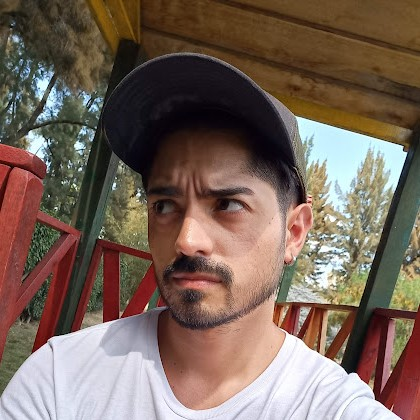

Frontend Developer
Mauricio Pisco
Más de cinco años aportando valor a la vertical de seguros de salud a través del foco en la calidad y la mejora continua.
Conocé mi trayectoria

Más de cinco años aportando valor a la vertical de seguros de salud a través del foco en la calidad y la mejora continua.
Conocé mi trayectoria